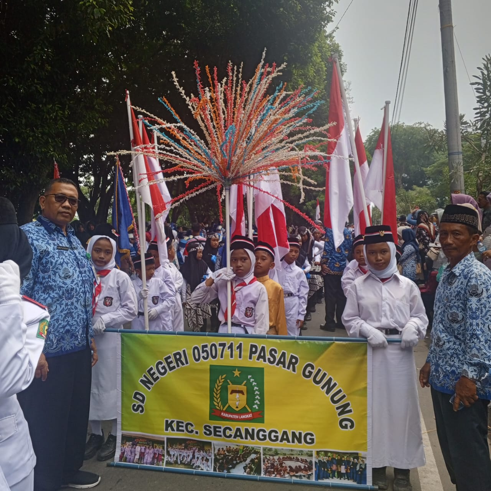
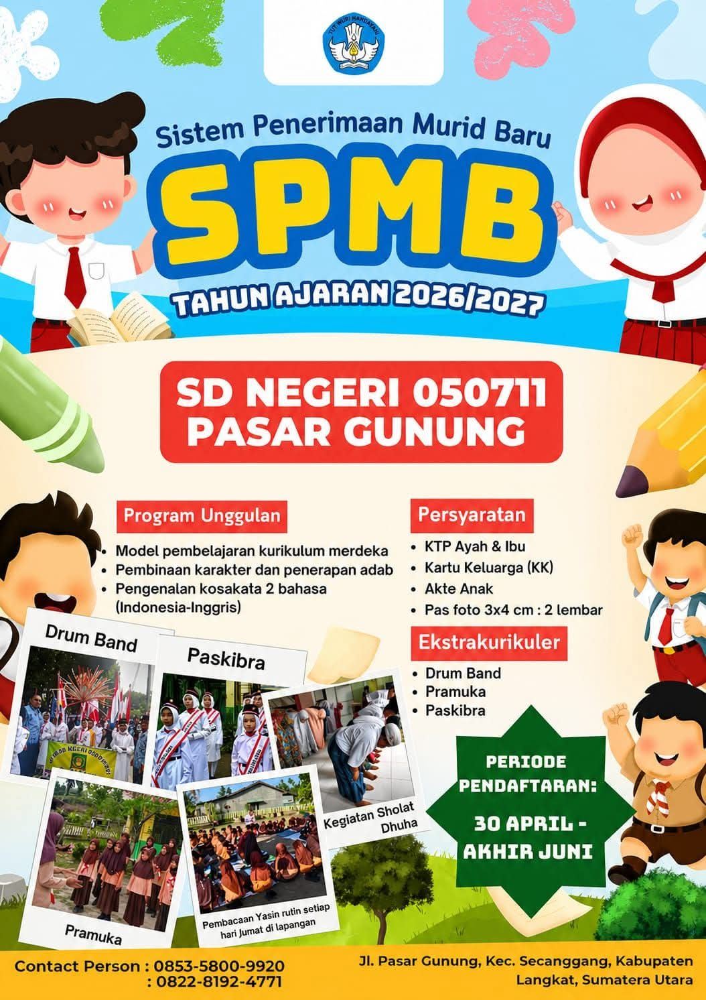

Kegiatan
SD Negeri 050711 Pasar Gunung mengadakan pawai budaya untuk memeriahkan peringatan HUT Kemerdekaan Republik Indonesia ke-80. Kegiatan ini diikuti oleh siswa, guru, dan orang tua dengan menampilkan beragam kostum profesi serta budaya daerah. Pawai berlangsung meriah dan mendapat sambutan hangat dari masyarakat. Selain sebagai bentuk perayaan kemerdekaan, kegiatan ini bertujuan menumbuhkan rasa cinta tanah air, semangat kebersamaan, dan kreativitas peserta didik. Acara juga dimeriahkan dengan berbagai kegiatan hiburan dan pembagian hadiah yang menambah semangat seluruh peserta. Melalui kegiatan ini, sekolah berharap nilai-nilai nasionalisme dapat terus tertanam dalam diri siswa.

SPMB 2026/2027
Sekolah menyediakan berbagai program unggulan yang mendukung perkembangan akademik dan karakter siswa. Program tersebut meliputi penerapan Kurikulum Merdeka, pembinaan karakter dan adab, serta pengenalan kosakata dalam dua bahasa, yaitu Bahasa Indonesia dan Bahasa Inggris. Selain kegiatan belajar mengajar, sekolah juga menyediakan berbagai kegiatan ekstrakurikuler yang dapat mengembangkan bakat dan minat siswa, di antaranya Drum Band, Pramuka, dan Paskibra. Berbagai kegiatan keagamaan dan pembinaan karakter juga rutin dilaksanakan sebagai bagian dari pembentukan kepribadian peserta didik.